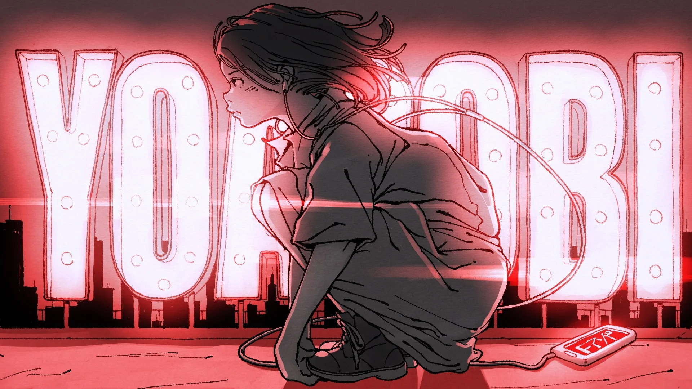
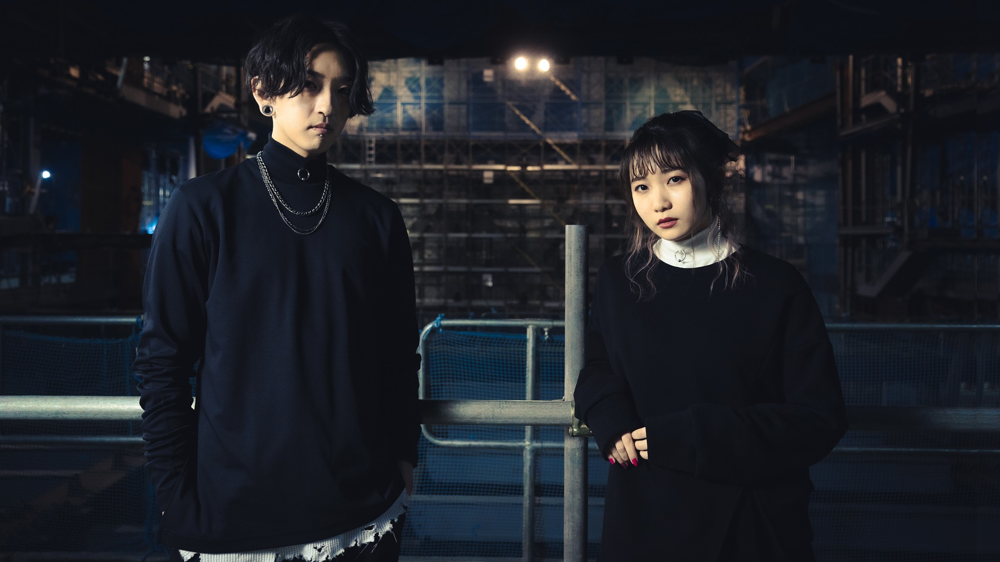
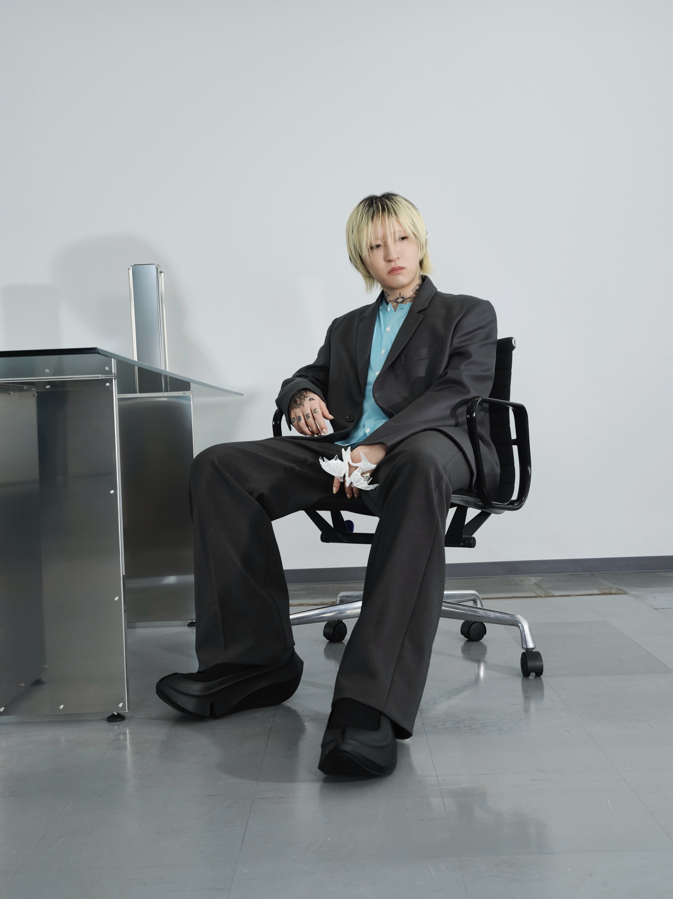
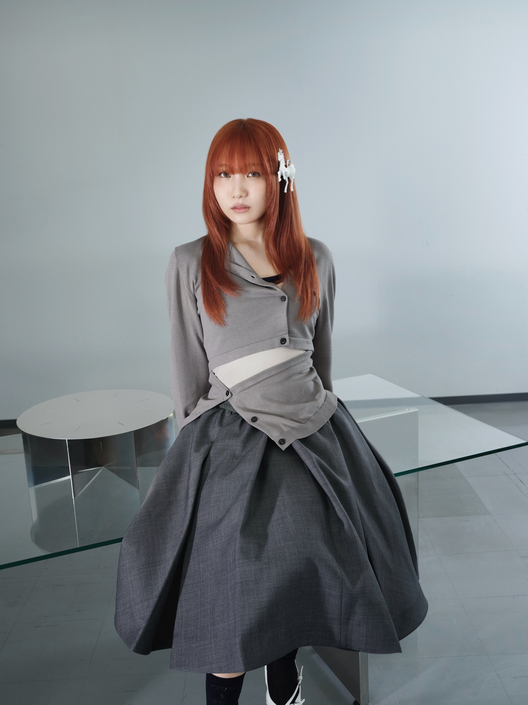

PLOFILE

YOASOBI
コンポーザーのAyaseとボーカルのikuraによる、ソニーミュージックが運営する小説・イラスト投稿サイト「monogatary.com」から誕生した、“小説を音楽にする”ユニット。従来のバンドやグループとは異なり、「原作となる物語」が存在し、それを楽曲や映像へと昇華させていくという、非常にユニークなコンセプトで結成された。
2019年11月に公開された第1弾楽曲「夜に駆ける」は、星野舞夜氏の小説『タナトスの誘惑』を原作として制作され、TikTokをはじめとするSNSでのバイラルヒットをきっかけに爆発的な人気を博し、Billboard JAPANの年間チャートで首位を獲得するなど、デビュー曲にして日本の音楽シーンを塗り替える社会現象を巻き起こした。
2020年以降、コロナ禍においてデジタル配信を中心に急速に支持を広げ、同年末の『NHK紅白歌合戦』に初出場を果たし、角川武蔵野ミュージアムからの中継で見せた圧倒的なパフォーマンスは、幅広い世代にその存在を強く印象付けた。
その後も、アニメ『【推しの子】』の主題歌となった「アイドル」が、米ビルボードのグローバル・チャート（Global Excl. U.S.）で日本語楽曲として史上初の1位を獲得するなど、現在は世界的なポップアイコンとしての地位を確立している。

Ayase
VOCALOID producer / YOASOBI composer
1994年4月4日生まれ、山口県出身。2018年12月にVOCALOID楽曲を投稿開始。切なさと哀愁を帯びたメロディ、考察意欲を掻き立てる歌詞で人気を博し、2019年4月に発表した「ラストリゾート」はYouTube1600万再生突破。2019年11月リリースの初EP「幽霊東京」は即完。ボカロ楽曲を自身が歌唱するセルフカバーにも定評があり、「夜撫でるメノウ」は4700万再生を突破。自身がボーカルを務める楽曲もリリースする中、ボカロPとしての活動、さまざまなアーティストへの楽曲提供も行っている。

ikura
Singer - Songwriter / YOASOBI vocal
2000年9月25日生まれ、東京都出身。シンガーソングライター“幾田りら”として活動し、2021年3月に配信リリースした「Answer」は、東京海上日動あんしん生命「あんしん就業不能保障保険」ＣＭソングに起用。7月16日に公開となった細田守監督映画『竜とそばかすの姫』では、主人公・すずの親友役で初の声優を務めた。ドラマ主題歌やCMソングを多数手がけており、多方面で精力的に活動を続けている。